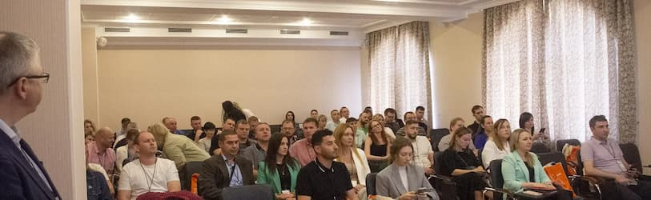

Программа конференции обещает быть насыщенной и полезной для всех участников. В первой половине дня делегаты познакомятся с последними обновлениями систем, включая онлайн-контроль оборудования ASystemCounter и новые возможности ASystemMail. Особое внимание будет уделено презентации инновационного приложения для документооборота ASystemDoc.
Во второй половине дня участников ждут доклады о расширении API, переходе на новую платформу и оптимизации рабочих процессов. Отдельное время будет выделено для живого общения и ответов на вопросы участников.
Представители ООО ИПК «Лазурь» отмечают, что подобные мероприятия – отличная возможность не только узнать о новых технологиях, но и установить полезные деловые контакты, обменяться опытом с коллегами из других компаний.
Место проведения: ГК «Измайлово», Измайловское ш., 71к4Г-Д Время работы: с 9:30 до 17:30
По итогам конференции команда ООО ИПК «Лазурь» планирует внедрить ряд инновационных решений в свою работу и поделиться полученными знаниями с коллегами.
9:30 -10.30 Регистрация участников конференции
10:30 Вступительное слово
10:45-13:00
13:30-14.15 Кофе-брейк
14:30 -17.30